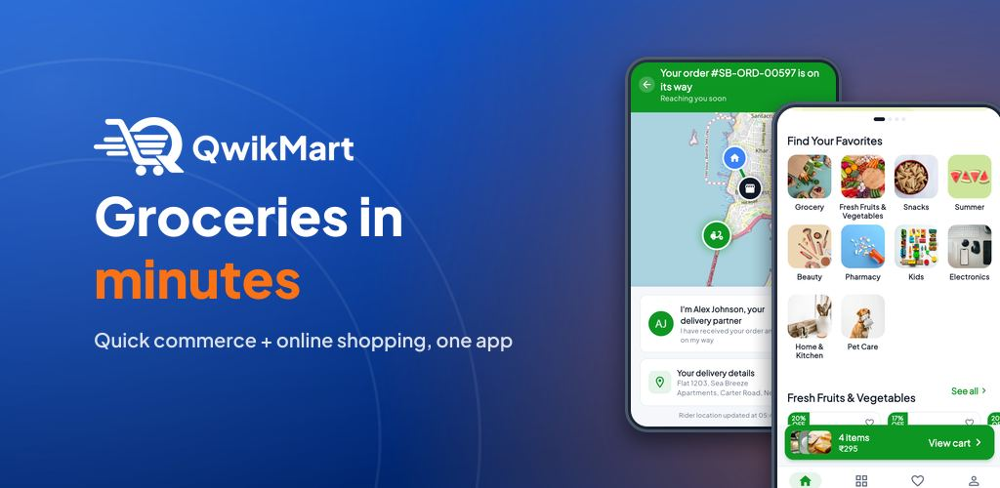
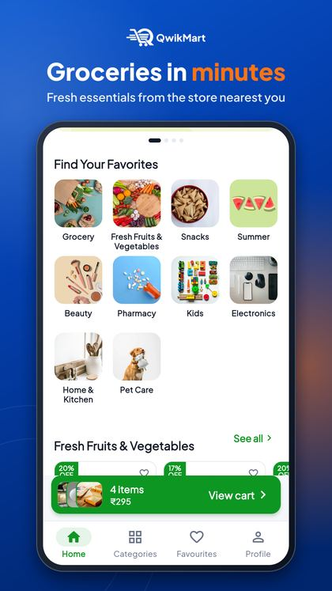
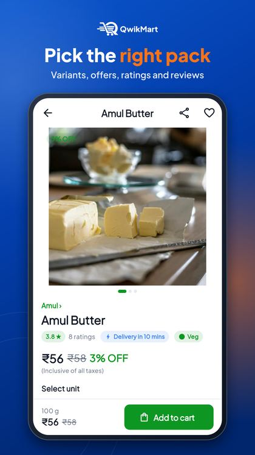
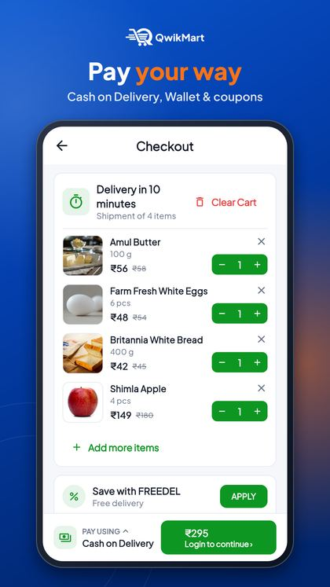
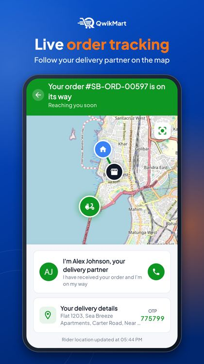
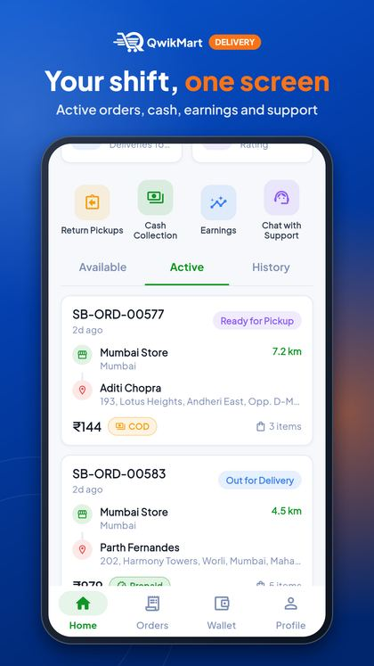
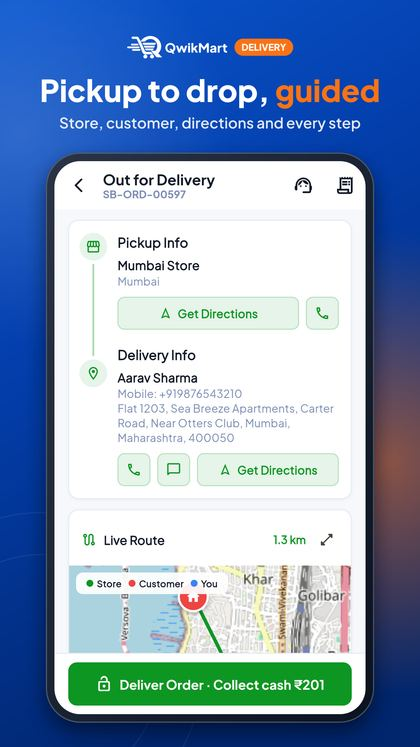
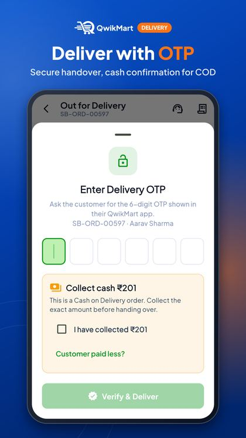
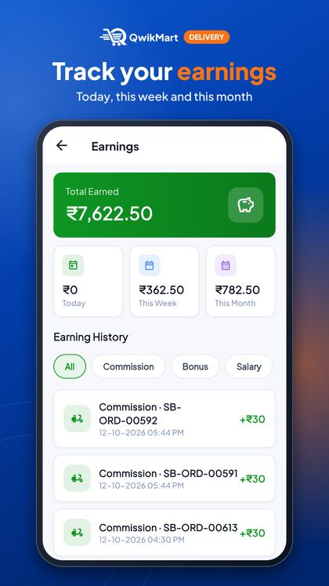

Quick Commerce & eCommerce platform: customer website, admin panel, store panel, customer app and delivery partner app, all running on Firebase.

Thank you for purchasing QwikMart. This guide takes you from the downloaded files to a live store with a working website, admin panel and Android apps.
QwikMart is a complete platform for running a grocery or general retail delivery business. It supports two ways of selling:
It is written for store owners and non-technical users. You do not need to know how to program. You will need to:
Plan for about half a day for the first installation. Most of that time is spent waiting for Firebase to finish deploying.
| Label | Meaning |
|---|---|
| No coding | Done by clicking on a website. |
| Copy & paste | You copy commands into a terminal or replace values in a file. |
| Optional | You can skip this step. |
| Developer | Easier with help from a developer. |
| YOUR-PROJECT-ID | A placeholder. Replace it with your own value, without the highlight. |
| Computer | How |
|---|---|
| Windows | Install Git for Windows (see What you need). Then right-click the QwikMart folder and choose Open Git Bash here. All commands in this guide work in Git Bash. |
| macOS | Open Terminal, type cd (with a space), drag the QwikMart folder into the window and press Enter. |
admin, web, firebase, …). If a command fails, check that you are in the right folder.These points affect how you plan your setup. Please read them before you start.
firebase/tools/emulator-data, but QwikMart has no tool to copy it into a live Firebase project. Developers can explore it on their own computer with the Firebase Emulator (see Appendix A).QwikMart has five parts. All of them use the same Firebase project, so an order placed in the app appears in the admin panel straight away.
| Part | Folder | What it does |
|---|---|---|
| Backend | firebase/ | The "engine": database rules, order processing, payments, delivery assignment, notifications and emails. It runs on Firebase. You deploy it once and update it when needed. |
| Admin, Store & Delivery panels | admin/ | One website with three logins: Super Admin (/admin), Store owner (/store) and Delivery partner (/delivery). |
| Customer website | web/ | Your online shop: browse, cart, checkout, order tracking, wallet, referrals, blog. |
| Customer app | customer_app/ | Android app for shoppers (Flutter). Same features as the website, plus push notifications. |
| Delivery partner app | delivery_app/ | Android app for your riders: accept orders, navigate, deliver with an OTP code, collect cash and track earnings. |
| Documentation | documentation/ | This guide (index.html and user-guide.pdf) and the tools/make-admin.mjs helper. |








| Account | Required? | Notes |
|---|---|---|
| Google account + Firebase (console.firebase.google.com) | Required | Blaze plan with a billing card. |
| Google Play Console | For the apps | One-time registration fee (currently US$25) to publish Android apps. |
| Payment gateway(s) | Recommended | Cash on Delivery and Wallet work without one. |
| Email (SMTP) account | Recommended | For order emails, e.g. Gmail with an app password, Zoho, SendGrid or Mailgun. |
| SMS provider | Optional | Firebase Phone Auth sends login OTPs without a separate provider. |
| Your own domain name | Optional | Firebase gives you free .web.app addresses. |
| Google Gemini API key | Optional | Turns on the AI features in the admin panel. |
A Windows 10/11 or macOS computer with at least 8 GB of RAM (16 GB recommended for building the apps).
| Software | Needed for | Where to get it |
|---|---|---|
| Node.js 22 (LTS) | Steps 4–6 | nodejs.org. Choose version 22; other major versions are not supported. |
| Firebase CLI | Steps 4–5 | After installing Node.js, run npm install -g firebase-tools |
| Git for Windows (Windows only) | All steps | git-scm.com. It provides the Git Bash terminal. |
| A text editor | Step 3 | Visual Studio Code (free) is recommended. |
| Flutter 3.41 or newer | Step 8 (apps) | docs.flutter.dev/get-started/install |
| Android Studio | Step 8 (apps) | developer.android.com/studio. It installs the Android SDK and Java. |
To check that everything is installed, open a terminal and run:
node -v # should print v22.x.x firebase --version # any recent version flutter doctor # only needed for Step 8; fix anything marked with ✗
This is all done at console.firebase.google.com, signed in with your Google account.
myshop-4f2a1. Write it down. This guide calls it YOUR-PROJECT-ID.firebaseConfig. Copy these six values into a notepad file: apiKey, authDomain, projectId, storageBucket, messagingSenderId, appId. You need them in Step 3. You can view them again later in Project settings.https://website-site.web.app and https://admin-site.web.app.Every Android app on Google Play has a unique ID, written like a reversed web address. Choose two IDs now, for example:
| App | Example ID |
|---|---|
| Customer app | com.yourbrand.customer |
| Delivery partner app | com.yourbrand.delivery |
com.qwikmartapp.customer and com.qwikmartapp.delivery) belong to the author, and Google Play will reject them. An ID can never be changed after you publish. You add the IDs to the apps and register them in Firebase in Step 8.Now replace the author's Firebase settings with yours. Open the QwikMart folder in your text editor and change the files below. In each file, change only the highlighted values.
.firebaserc), and Windows and macOS hide them by default. Visual Studio Code always shows them. In Windows File Explorer, use View → Show → Hidden items..firebaserc: two filesThere is one in the main folder and one in firebase/. Make both look like this:
{
"projects": {
"default": "YOUR-PROJECT-ID"
}
}
firebase.json in the main folderPut your two Hosting site names (Step 2.2) into the two "site" lines:
"site": "website-site", ← was "qwikmart-infidec" (the line followed by "source": "web") ... "site": "admin-site", ← was "qwikmart-admin" (the line followed by "source": "admin")
Leave everything else in this file unchanged. Do not edit firebase/firebase.json; it needs no project-specific values.
firebase/functions/, find the file .env.qwikmart-infidec..env.YOUR-PROJECT-ID (e.g. .env.myshop-4f2a1).HOT_MIN_INSTANCES=0
ENFORCE_APP_CHECK=false
WEBSITE_URL=https://website-site.web.app
| Setting | Meaning |
|---|---|
HOT_MIN_INSTANCES | 0 = cheapest. The first request after a quiet period takes a few seconds. 1 = always fast, but Google charges for 3 servers that stay running. Start with 0. |
ENFORCE_APP_CHECK | Leave false. |
WEBSITE_URL | The address of your customer website, used in links inside order emails. Use your own domain if you have one. |
web/.env.localCopy web/.env.example, name the copy web/.env.local (in the same folder) and fill it in with the values from Step 2.1:
NEXT_PUBLIC_USE_MOCK=false NEXT_PUBLIC_FIREBASE_API_KEY=apiKey NEXT_PUBLIC_FIREBASE_AUTH_DOMAIN=YOUR-PROJECT-ID.firebaseapp.com NEXT_PUBLIC_FIREBASE_PROJECT_ID=YOUR-PROJECT-ID NEXT_PUBLIC_FIREBASE_STORAGE_BUCKET=storageBucket NEXT_PUBLIC_FIREBASE_MESSAGING_SENDER_ID=messagingSenderId NEXT_PUBLIC_FIREBASE_APP_ID=appId NEXT_PUBLIC_FIREBASE_VAPID_KEY= NEXT_PUBLIC_USE_EMULATORS=false NEXT_PUBLIC_SITE_URL=https://website-site.web.app
admin/.env.localCopy admin/.env.example, name the copy admin/.env.local and make it look like this:
NEXT_PUBLIC_FIREBASE_API_KEY=apiKey NEXT_PUBLIC_FIREBASE_AUTH_DOMAIN=YOUR-PROJECT-ID.firebaseapp.com NEXT_PUBLIC_FIREBASE_PROJECT_ID=YOUR-PROJECT-ID NEXT_PUBLIC_FIREBASE_STORAGE_BUCKET=storageBucket NEXT_PUBLIC_FIREBASE_MESSAGING_SENDER_ID=messagingSenderId NEXT_PUBLIC_FIREBASE_APP_ID=appId NEXT_PUBLIC_FIREBASE_FUNCTIONS_REGION=asia-south1 NEXT_PUBLIC_USE_EMULATORS=false NEXT_PUBLIC_EMULATOR_HOST=127.0.0.1
NEXT_PUBLIC_USE_EMULATORS=true. It must be false. Otherwise the published admin panel tries to connect to a test server on your own computer and nothing loads.This uploads the database rules, the search indexes and the server code (Cloud Functions) to your Firebase project.
Open a terminal in the main QwikMart folder and run these commands one at a time:
# 1. Log in to Firebase (a browser window opens; pick your Google account) firebase login # 2. Install the backend's packages (takes a few minutes the first time) cd firebase npm install cd functions npm install cd .. # 3. Deploy rules, indexes and server code firebase deploy --only firestore,storage,functions --project YOUR-PROJECT-ID
✔ Deploy complete!This allows the backend to create secure download links for invoices and exports.
-compute@developer.gserviceaccount.com and click the ✏️ pencil icon.If you skip this, invoices still work, but they use a less restrictive link type.
In a terminal in the main QwikMart folder:
# 1. Allow Firebase Hosting to build Next.js websites (needed once per computer) firebase experiments:enable webframeworks # 2. Install the website's and the admin panel's packages cd web npm install cd ../admin npm install cd .. # 3. Build and publish both sites (takes 5–10 minutes) firebase deploy --only hosting --project YOUR-PROJECT-ID
To publish only one of them later:
firebase deploy --only hosting:website-site --project YOUR-PROJECT-ID firebase deploy --only hosting:admin-site --project YOUR-PROJECT-ID
| What | Address |
|---|---|
| Customer website | https://website-site.web.app |
| Super Admin login | https://admin-site.web.app/admin/login |
| Store owner login | https://admin-site.web.app/store/login |
| Delivery partner web panel | https://admin-site.web.app/delivery/login |
The website will look empty for now. That's expected, because you haven't added any products yet.
In Firebase, go to Authentication → Settings → Authorized domains and click Add domain for each of these:
website-site.web.appadmin-site.web.appWithout this step, phone OTP login and password-reset links fail on those addresses.
In Hosting, click Add custom domain next to the site, follow the instructions to add DNS records at your domain provider, then add the domain to Authorized domains (5.3). Also update WEBSITE_URL (Step 3.3) and NEXT_PUBLIC_SITE_URL (Step 3.4), then deploy again.
A new project has no admin account, so you can't log in to the admin panel yet. The included helper documentation/tools/make-admin.mjs creates the first one. After that, you create every other account from inside the admin panel.
.json file downloads. Rename it to admin-key.json and move it into the folder firebase/functions/.documentation/tools/make-admin.mjs into the same folder, firebase/functions/.cd firebase/functions node make-admin.mjs admin-key.json you@yourbrand.com "YourStrongPassword" "Your Name"You should see
Done. you@yourbrand.com is now a Super Admin…
https://admin-site.web.app/admin/login.admin-key.json and make-admin.mjs from firebase/functions/.Log in as Super Admin and work through this list in order. Each item depends on the ones before it: products need categories, stores need zones, and zones need a country.
Do these steps for both app folders: customer_app/ and delivery_app/. Building Android apps is the most technical part of the setup. If you have never done it, consider asking a Flutter developer. It's usually less than an hour of work for them. Developer
Install Flutter and Android Studio (see What you need), then run flutter doctor and fix anything marked with ✗, for example by accepting the Android licences with flutter doctor --android-licenses.
| What | File (inside the app folder) | Change |
|---|---|---|
| App ID (required) | android/app/build.gradle.kts | The line applicationId = "com.qwikmartapp.customer" → your ID from Step 2.3. Do not change the namespace line. |
| App name | android/app/src/main/AndroidManifest.xml | android:label="QwikMart" → your app's name. |
| Colours | lib/core/theme.dart | primary (and accent in the customer app), e.g. Color(0xFF1846D1). Keep 0xFF and replace the last six characters with your hex colour. |
| Logos | assets/brand/ | Replace the four PNG files with your own, keeping the same file names and similar proportions. |
| App icon & splash | assets/icon/ | Replace the PNG files (same names and sizes), then run the two commands below. |
cd customer_app # or: cd delivery_app
flutter pub get
dart run flutter_launcher_icons
dart run flutter_native_splash:create
The website and admin panel logos are in web/public/images/brand/ and admin/public/images/brand/. Replace those files too, keeping the names, and publish again (Step 5).
The FlutterFire tool registers the app in your Firebase project and writes the two connection files (lib/firebase_options.dart and android/app/google-services.json):
# once per computer dart pub global activate flutterfire_cli # customer app cd customer_app flutterfire configure --project=YOUR-PROJECT-ID --platforms=android,web \ --android-package-name=com.yourbrand.customer cd .. # delivery app cd delivery_app flutterfire configure --project=YOUR-PROJECT-ID --platforms=android,web \ --android-package-name=com.yourbrand.delivery cd ..
The \ at the end of a line means the command continues on the next line. You can also type it as one long line without the \.
If it asks whether to overwrite the existing files, answer yes. If flutterfire is not found, close the terminal, open a new one and try again.
google-services.json into android/app/, and replace the projectId, appId, apiKey, messagingSenderId and storageBucket values in lib/firebase_options.dart with the values from that file.Turn on Developer options → USB debugging on an Android phone, connect it with a cable and run:
cd customer_app flutter run
Google Play requires every update to be signed with the same key.
keytool -genkey -v -keystore upload-key.jks -keyalg RSA -keysize 2048 -validity 10000 -alias upload
Store the .jks file and its passwords somewhere safe outside the project folder, and back them up. Then create the file android/key.properties in each app:
storePassword=your store password keyPassword=your key password keyAlias=upload storeFile=C:/Users/you/keys/upload-key.jks
.jks file or its password, you won't be able to publish updates to your app. Back it up.keytool -list -v -keystore upload-key.jks -alias uploadflutterfire configure again (or download google-services.json again) so the app gets the updated file.First increase the version: line in pubspec.yaml for every upload, e.g. 1.0.0+1 → 1.0.1+2. The number after + must always go up.
# customer app cd customer_app flutter build appbundle --release # delivery app cd ../delivery_app flutter build appbundle --release --dart-define=FALLBACK_TO_MOCK=false
The file to upload is build/app/outputs/bundle/release/app-release.aab inside each app folder.
.aab file to a testing track first. Google requires new personal developer accounts to run a closed test before going to production.| Person | Uses | Typical tasks |
|---|---|---|
| You / your team | Admin panel /admin | Everything: catalogue, orders, stores, riders, customers, payouts, marketing, reports, settings. |
| Store owner / staff | Store panel /store | Their store's orders, products, stock, riders and reports only. |
| Delivery partner | Delivery app (or /delivery on the web) | Go online, accept orders, deliver, collect cash, view earnings, request withdrawals. |
| Customer | Website or customer app | Shop, pay, track, return, wallet, refer friends, chat with support. |
Customers can cancel orders, as long as the status still allows it, and request returns. Handle returns in Return Requests, where you can refund to the wallet or the original payment method.
When you install a new version, keep a copy of the files you edited (see Appendix B) and copy them back into the new version. Then deploy again: run the backend command from Step 4, the website and admin command from Step 5, and build new app versions with a higher version number (Step 8.7). Your data stays safe in Firebase while you update.
| Problem | Solution |
|---|---|
| Deploy says the project must be on the Blaze plan. | Upgrade the project (Step 1.2) and deploy again. |
| The first functions deploy fails with a permission or Eventarc error. | Wait 5 minutes and run the same deploy command again. |
firebase: command not found | Run npm install -g firebase-tools, then open a new terminal. |
| Admin login sends you back to the login page or says you have no access. | The account isn't a Super Admin yet. Run Step 6 for that email, then log out and log in again. |
| Admin panel loads but shows nothing, or keeps spinning. | Check that admin/.env.local has NEXT_PUBLIC_USE_EMULATORS=false and your own values (Step 3.5), then publish again (Step 5). |
| The website shows a "DEMO DATA" badge. | NEXT_PUBLIC_USE_MOCK is true in web/.env.local. Set it to false (Step 3.4) and publish again. |
| The website loads but shows no data and errors appear in the browser console. | The Firebase settings in web/.env.local are missing or wrong. Check every value against Step 2.1 and publish again. |
| A table says it "needs a Firestore index". | The indexes are still building (wait a few minutes) or weren't deployed. Run firebase deploy --only firestore --project YOUR-PROJECT-ID from the firebase folder. |
| The app or website home screen is empty. | Publish a layout in Home Builder (Step 7.4). Also check that the customer's location is inside a zone and that products have stock in that zone's store. |
| "Location not serviceable". | The address is outside every zone. Edit the zone and widen the area on the map. |
| Phone OTP fails with a "region" message. | Allow the country in Authentication → Settings → SMS region policy. |
| Phone OTP fails in the Android app (reCAPTCHA appears or "app not authorized"). | Add the SHA-1 and SHA-256 fingerprints (Step 8.6) and update google-services.json. |
| Password-reset link or website phone login fails. | Add the domain to Authorized domains (Step 5.3). |
| The app opens but can't connect, or crashes at start. | The google-services.json doesn't match the app ID. Make sure applicationId (Step 8.2) and the ID used in flutterfire configure (Step 8.3) are identical. |
| Order emails aren't sent. | Check the SMTP settings (Step 7.6). Gmail requires an app password, not your normal password. |
| A payment gateway doesn't appear at checkout. | It must be enabled and have all of its keys filled in (System Settings → Payment Gateways). Some gateways only support certain currencies. |
| A rider can't go online. | Allow location permission ("Allow all the time" on Android) and make sure the rider is approved for a zone. |
| Invoice links don't open. | Complete Step 4.2, then try again. |
The demo data (stores, products, orders and demo accounts) is included only for local testing with the Firebase Emulator Suite, which is a copy of Firebase that runs on your own computer. Nothing here touches your live project.
Requirements: Node.js 22 and Java 11 or newer. Android Studio includes Java; otherwise install a JDK.
# terminal 1: start the local Firebase with the demo data cd firebase npm install npm --prefix functions install npm --prefix functions run build npx firebase emulators:start --project YOUR-PROJECT-ID --import tools/emulator-data # Emulator dashboard: http://127.0.0.1:4000
# terminal 2: admin panel against the local data cd admin # temporarily set NEXT_PUBLIC_USE_EMULATORS=true in admin/.env.local npm run dev # http://localhost:3001/admin/login # terminal 3: customer website cd web # temporarily set NEXT_PUBLIC_USE_EMULATORS=true in web/.env.local npm run dev # http://localhost:3000 # apps (Android emulator) cd customer_app && flutter run --dart-define=USE_EMULATORS=true
| Demo login (local only) | Password | |
|---|---|---|
| Super Admin | admin@gmail.com | 123456 |
| Store owner | mumbai@store.com | Mumbai@1 |
| Delivery partner | alex@gmail.com | Alex@1234 |
| Customer | customer@gmail.com | 123456 |
NEXT_PUBLIC_USE_EMULATORS=false in both .env.local files again. Never create these demo accounts in your live project: their passwords are public.The emulator doesn't save your changes when it stops. To keep them, add --export-on-exit=my-data to the start command, using a different folder name. Don't overwrite tools/emulator-data.
Both apps also have an offline demo mode that needs no Firebase at all: flutter run --dart-define=USE_MOCK=true.
Keep a copy of these files. You'll need them again when you update to a new version.
| File | Step | What you change |
|---|---|---|
.firebaserc | 3.1 | Project ID |
firebase/.firebaserc | 3.1 | Project ID |
firebase.json | 3.2 | Two Hosting site names |
firebase/functions/.env.YOUR-PROJECT-ID | 3.3 | Renamed; website URL, warm instances |
web/.env.local | 3.4 | Firebase web settings, site URL |
admin/.env.local | 3.5 | Firebase web settings, emulators off |
*_app/android/app/build.gradle.kts | 8.2 | applicationId |
*_app/android/app/src/main/AndroidManifest.xml | 8.2 | App name |
*_app/lib/core/theme.dart | 8.2 | Colours |
*_app/assets/brand/*, *_app/assets/icon/* | 8.2 | Logos, icon, splash |
web/public/images/brand/*, admin/public/images/brand/* | 8.2 | Website and panel logos |
*_app/lib/firebase_options.dart, *_app/android/app/google-services.json | 8.3 | Written by flutterfire configure |
*_app/android/key.properties | 8.5 | Signing key (keep private) |
*_app/pubspec.yaml | 8.7 | version: for every release |
*_app means both customer_app and delivery_app.
| Part | Technology |
|---|---|
| Backend | Firebase Cloud Functions v2 (TypeScript, Node.js 22, region asia-south1), Cloud Firestore, Cloud Storage, Firebase Authentication (email/password, phone OTP, anonymous guests), Firebase Cloud Messaging. There is no separate server and no SQL database. |
| Admin / Store / Delivery panels | Next.js 15, React 19, TypeScript, Tailwind CSS, Firebase JS SDK, deployed with Firebase Hosting (web frameworks). |
| Customer website | Next.js 15, React 19, Tailwind CSS, Firebase JS SDK, Leaflet / OpenStreetMap maps (no map API key needed). |
| Mobile apps | Flutter 3.41+ (Dart 3.11), Riverpod, go_router, FlutterFire, flutter_map / OpenStreetMap. Android: minSdk 24, targetSdk 36. |
| Payments | Processed in Cloud Functions: Stripe, PayPal, Razorpay, Cashfree, PhonePe, PayTabs, Midtrans, Paystack, plus COD and wallet. |
| Secrets | Stored in Firestore settings/private_* documents that only the Super Admin and the backend can read. They are edited in System Settings. |
QwikMart/ ├── admin/ Admin, Store and Delivery web panels (Next.js) ├── web/ Customer website (Next.js) ├── customer_app/ Customer Android app (Flutter) ├── delivery_app/ Delivery partner Android app (Flutter) ├── firebase/ │ ├── functions/ Cloud Functions (backend code) │ ├── tools/ Developer tools + emulator-data/ (local demo data) │ ├── firestore.rules, storage.rules, firestore.indexes.json │ └── firebase.json Backend + emulator configuration ├── firebase.json Hosting configuration (website + admin) ├── .firebaserc Default Firebase project └── documentation/ This guide
Each sub-folder also has a README.md with technical details for developers.
If you're stuck, please contact us. Include your purchase code, the step number in this guide, and a screenshot of any error message.
| Channel | Details |
|---|---|
| [your support email] | |
| CodeCanyon | [your CodeCanyon profile link], then the item's Support tab |
| Response time | [e.g. within 1–2 business days] |
Item support covers questions about the item, help with reported bugs, and help with included third-party assets. It does not cover installation on your servers, customisation, or problems caused by third-party services (Firebase billing, payment gateway approval, Google Play review). Those can be offered as a separate paid service.
firebase/tools/assets/CREDITS.md for each photo's source and licence.Thank you for choosing QwikMart. If it helps your business, please consider leaving a rating on CodeCanyon. ⭐